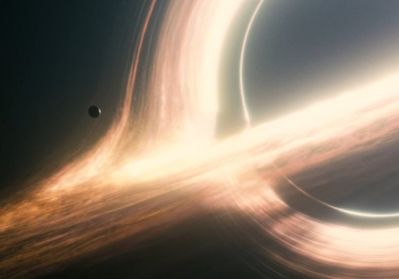

Gargantua
Forat negre supermassiu
Imatge espectacular de l'anell d'acreció proper a l'horitzó de successos de Gargantua, el forat negre supermassiu on els nostres protagonistes s'aproparen per prendre unes fotos per a l'Instagram